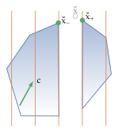
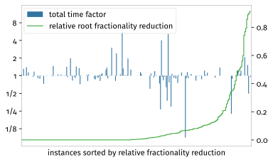
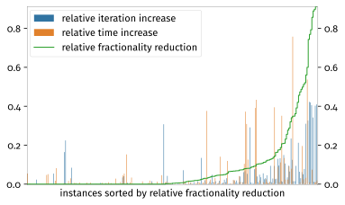

Linear Programming in MILP Solving
A Computational Perspective
Matthias Miltenberger
Once upon a time…

… I set out to the exciting world of optimization!
From SCIP 2.0 to 7.0…
… from SoPlex 1.5 to 5.0!
SCIP 2.0 to 7.0 and SoPlex 1.5 to 5.0
- SoPlex:
- bound flipping ratio test
- LP solution polishing
- improved row representation
- better sparsity exploitation
- increased numerical stability
- SCIP:
- new LP interface to SoPlex
- persistent scaling
- TreeD visualization tool
- PySCIPOpt Python interface
Introduction to the problem
Linear programming
\[ \begin{align} \max && c^Tx & \\ \text{subject to} && Ax & \leq b \\ && x &\geq 0 \\ && \phantom{x_j} & \phantom{\in \mathbb{Z}, \forall j \in \mathcal{I}} \end{align} \]
- \(A\in\mathbb{R}^{m,n},\; b\in\mathbb{R}^m,\; c\in\mathbb{R}^n\)
- LP in canonical form
- two common ways to solve:
Simplex algorithm:
📑 Dantzig, 1947
Barrier method:
📑 Kamarkar, 1984
Mixed-integer linear programming
\[ \begin{align} \max && c^Tx & \\ \text{subject to} && Ax & \leq b \\ && x & \geq 0 \\ && \color{blue}{x_j} & \color{blue}{\in \mathbb{Z}, \forall j \in \mathcal{I}} \end{align} \]
- additional integrality constraints
- common way to solve: branch-and-cut
Branch-and-bound:
📑 Land and Doig, 1960
Mixed-integer linear programming
\[ \begin{align} \max && c^Tx & \\ \text{subject to} && Ax & \leq b \\ && x & \geq 0 \\ && \color{RoyalBlue}{x_j} & \color{RoyalBlue}{\in \mathbb{Z}, \forall j \in \mathcal{I}} \end{align} \]
- additional integrality constraints
- common way to solve: branch-and-cut
Branch-and-bound:

📑 Land and Doig, 1960
Cutting plane separation:
📑 Gomory, 1958
Visualization of solving process
SCIP Optimization Suite


Benchmark sets for computational experiments
LP (1336 instances):
- Netlib benchmark set
http://www.netlib.org/lp/ - Csaba Mészáros’s LP collection
http://www.sztaki.hu/~meszaros/public_ftp/lptestset/ - COR@L w/o integrality
http://coral.ie.lehigh.edu/data-sets/mixed-integer-instances/ - MIPLIB1, MIPLIB 32, MIPLIB 20033, MIPLIB 20104, and MIPLIB 20175 w/o integrality
MILP (240 instances):
- MIPLIB 2017 benchmark set
https://miplib.zib.de/
📑 1: Bixby, Boyd, and Indovina, 1992
📑 2: Bixby, Ceria, et al., 1998
📑 3: Achterberg, Koch, and Martin, 2006
📑 4: Koch, Achterberg, et al., 2011
📑 5: Gleixner, Hendel, et al., 2021
SoPlex
Spotlight on some selected features
Row representation
- define the Simplex basis not as subset of columns but of rows
- basic rows are active constraints defining the current vertex
A:
Basis:
| column rep | row rep | |
|---|---|---|
| entering type | primal simplex | dual simplex |
| leaving type | dual simplex | primal simplex |
- new features often need to be implemented twice
Row representation
- define the Simplex basis not as subset of columns but of rows
- basic rows are active constraints defining the current vertex
A:
Basis:
| column rep | row rep | |
|---|---|---|
| entering type | primal simplex | dual simplex |
| leaving type | dual simplex | primal simplex |
- new features often need to be implemented twice
Computational results
Computational results
- always column representation:
8% slowdown - always row representation:
43% slowdown - automatic switch to row when row/column ratio > 1.2
Bound flipping ratio test
- also known as long step rule
- allows increasing the progress made in a single iteration in the dual simplex
- combine several iterations into one
- impact on LP benchmark:
- 17% fewer iterations
- 7% speedup
Impact of LP in solving MILPs
Persistent scaling
- one scaling factor for every row and every column: \(A'=RAC,\; R,C\) diagonal
- keep LP scaling factors for the entire MILP solving process
- pass all LP modifications through scaling layer
- better numerics and performance for cuts and node LPs
- solves 9 more instances on MIPLIB 2017
LP Solution Polishing
- not all solutions are equal
- additional iterations to find less fractional solutions (more non-basic integer variables)
- performed internally by SoPlex
- SCIP provides integrality information
Not to be confused with [MIP] Solution Polishing by Ed Rothberg, An evolutionary algorithm for polishing mixed integer programming solutions, INFORMS Journal on Computing (2007).
Computational results on MIPLIB 2017
First LP effect on MIPLIB 2017
Tabular results

Different LP solvers in SCIP (MIPLIB 2017)
Pure LP comparison
Effect on the root gap (MIPLIB 2017)
| LP solver | wins |
|---|---|
| CPLEX | 79 |
| SoPlex | 59 |
| MOSEK | 55 |
| Gurobi | 53 |
| Xpress | 51 |
| Clp | 48 |
177 instances finished root node after one hour
Numerics in
Branch & Bound & Cut
Joint work with Ted Ralphs and Dan Steffy
A difficult question…
… is it Laurel or Yanny?
A numerically difficult question…
Consider this feasibility problem (no objective function):
\[ \begin{align} x + 10^{-8}y &= 10^{-7}\\ x, y &= 0 \end{align} \]
- mathematically infeasible (because \(0 + 0 \neq 10^{-7}\))
- using a feasibility tolerance of \(\epsilon=10^{-6}\):
\(x\) is basic
- \(y=0\) non-basic
- \(x=10^{-7}\) basic
- feasible solution (within \(\epsilon\))
\(y\) is basic
- \(x=0\) is non-basic
- \(y=10\) basic
- infeasible solution
-> The result depends on the chosen Simplex basis!
How to measure numerical difficulty?
Definition of condition number \(\kappa\) of a square matrix \(A\)
\(\kappa(A) = \|A\|\cdot\|A^{-1}\|\) provides upper bound on input error amplification in the solution of a linear system \(Ax=b\). It is the normed reciprocal of the distance to singularity and applicable to LP/MILP because of their reliance on solving linear systems with the Simplex basis matrix.
\(\kappa\):
\(\;1 \dots 10^7\)
fine
\(\;10^7 \dots 10^{10}\)
suspicious
\(\;10^{10} \dots 10^{14}\)
unstable
\(\;>10^{14}\)
ill-posed
- upper bound is typically not reached
- machine precision \(10^{-16}\) and tolerance \(10^{-6}\) to handle \(\kappa<10^{10}\)
- ideal: instance-specific, solver-independent metric for MILPs
LP approach
- compute a \(\kappa_\text{LP}\) value that captures the entire problem data \(d=(A,b,c)\): \[ \begin{align} \kappa_\text{LP}(d) &:= \frac{\left\|d\right\|}{\min\left\{\rho_P(d), \rho_D(d)\right\}}, \\[1em] \|d\| &:= \max\left\{\|A\|_{\infty,1}, \|b\|_1, \|c\|_1\right\},\\[.5em] \rho_P(d) &:= \min_{i\in\left\{1,\dots,m\right\},\;j\in\left\{-1,1\right\}} \min_{y,s,v} \max\left\{\left\|A^T y+s-\right\|_1, \left|b^T y - v\right|\right\} \\[-1em] & \hspace{8.8em}\text{subject to}\quad y_i=j, \\[.5em] \rho_D(d) &:= \min_{i\in\left\{1,\dots,n\right\},\;j\in\left\{-1,1\right\}} \min_{x,p,g} \max\left\{\left\|Ax - p \right\|_1, \left|c^T x + g\right|\right\} \\[-1em] & \hspace{8.6em}\text{subject to}\quad x_i=j \end{align} \]
Applied to MILP (ignoring integrality)

- both CPLEX and Xpress implement MIP-\(\kappa\)
- hard to make any reliable statements
- too many problems are “ill-conditioned†\((\kappa_\text{LP}\geq 10^{20})\)
- attention level learning appears to be a promising alternative
📑 Berthold, Numerics IV: Learning to pay attention, 2020
TreeD as a side product
Mittelmann benchmark plots
- interactive solver-by-solver comparisons1
- largest publicly available benchmark dataset for linear, mixed-integer, nonlinear, and combinatorial problems by Hans Mittelmann2
- published results are updated on a daily basis
- easier overview of latest ranking
- additional virtual best or portfolio solver to reveal performance potential
Conclusion
- Simplex-oriented perspective on MILP solving
- performance and stability improvements for LP in MILP
- persistent scaling
- solution polishing
- impact of different LP solvers in SCIP
- pure LP performance is not decisive factor
- LP-based numerical study on MILP
- goal: find holistic measure to determine when to branch
- resulting in TreeD visualization
- PySCIPOpt extending the accessibility and usability of SCIP
Thank you!
Algorithms
Simplex
Solution polishing
Figures
1. Introduction
Figure 1.5: Size distribution of LP test set, including solving time colorization for SoPlex with default settings. Sparsity is computed as nonzeros/\((n*m)\)
Figure 1.6: Number of iterations and time to optimality (using a time limit of one hour) with respect to the number of nonzero elements in the problem matrices
Figures
3. Implementational Aspects of the Simplex Algorithm
Figure 3.1: Minimum solving times for row and column representation depending on row to column ratio on the allLP test set.
Figure 3.4: Pricing statistics
Figure 3.6: Distribution of variability scores > \(10^{−6}\) for solving time and iterations of SoPlex 4.0.2 across three different seeds; allLP test set
Figures
4. Impact of Linear Programming in MILP
Figure 4.2: Fraction of time spent solving LPs during MILP solving; MIPLIB 2017 benchmark
Figure 4.3: Comparison of root LP performance with SCIP/MOSEK; MIPLIB 2017 benchmark
Figure 4.4: Histogram of fraction of time spent solving LPs during MILP solving; MIPLIB 2017 benchmark
Figure 4.5: Distribution of different LP types to be solved during MILP optimization; MIPLIB 2017 benchmark

Figure 4.9: Illustrative example of MDS transformation and associated Shepard error plot
Figure 4.10: TreeD visualization of MIPLIB3 instance lseu (89 binary variables, 28 constraints)

Figure 4.11: Shepard plot of original and transformed pairwise distances of all encountered node LP solutions after applying the MDS transformation
Figure 4.12: Overall performance comparison of different LP solvers in SCIP 6.0.2 with default settings on MIPLIB 2017 benchmark.
Figure 4.13: Distribution of solving time and iteration ratios for different LP solvers in SCIP to solve the root LPs on MIPLIB 2017 benchmark.
Figure 4.14: Development of node LP solving times and simplex iterations in the tree, relative to the root LP. MIPLIB 2017 instances solved within one hour by all solvers (54 instances)
Figure 4.15: Comparison of the gap after root node processing. Node limit of one, time limit of one hour on MIPLIB 2017 benchmark (117 instances).
Figure 4.16: Comparison of the node throughput, time limit of one hour MIPLIB 2017 benchmark. No cuts, no primal heuristics. Results are restricted to instances with a tree size of at least 100.
Figures
5. LP Solution Polishing

Figure 5.2: Effect of LP solution polishing on the condition numbers of the optimal basis matrix of first LP relaxations of the MIPLIB 2017 benchmark instances. Condition number changes are differences in log10 with and w/o polishing.
Figure 5.3: Effect of solution polishing on the fractionality of the first LP solution for the MIPLIB 2017 benchmark instances. 3 seeds with SCIP 7
Figure 5.4: Effect of solution polishing on the total solving time for the MIPLIB 2017 benchmark instances. Factors below 1 indicate a speedup. 3 seeds with SCIP 7.
Figures
6. Numerics in Branch & Bound & Cut
Figure 6.3: Condition number development (vertical axis, in log scale) for every simplex iteration in the root node (horizontal axis) including re-optimizations after adding cutting planes in multiple rounds (vertical lines). A plot of objective values at each iteration is overlaid as a dashed gray line with the scales given to the right of each plot.
Figure 6.4: Root node comparison of condition numbers of the original LP and after including cutting planes. Most instances show a higher condition number during the cutting stage and when this process is completed
Figure 6.5: Aggregated condition numbers (in log10 scale) for different tree depths. MMM test set; solved in 1 hour and min tree depth of 10. Mean value of condition numbers and the respective 95% confidence interval. Breadth-first search with different cutting plane separation strategies.

Figure 6.6: Expected developments of condition numbers (in log10 scale): aggressive separation (sepaaggr) leads to an increased condition number across the entire tree while disabled cutting plane separation generates a larger tree but has smaller condition numbers.
Figure 6.7: Unexpected developments of condition numbers (in log10 scale): Disabling cutting plane generation (sepaoff) leads to worse condition numbers. The left instance exhibits decreasing condition numbers going down the tree while for the right instance, the numbers are growing.
Figure 6.8: Statistics of the κ\(_\text{LP}\) values and the tree condition numbers for various MILPs. Note that the κ\(_\text{LP}\) values are in each case the lower bounds from the estimation. The lower right subplot shows the κ\(_\text{LP}\) distribution which is independent of the solver.
PySCIPOpt
The Python interface to SCIP
Python interface to SCIP
- easy entryway to using and extending SCIP
- publicly developed on GitHub1 under the MIT license since 2016
conda install pyscipoptalso installs the SCIP Opt Suite
Modeling example
Mathematical formulation \[\begin{align*} &\text{minimize} & x + 3y & \\ &\text{subject to} & 2x - y^2 & \geq 10 \\ & & x, y & \geq 0 \\ & & x & \in \mathbb{R} \\ & & y & \in \mathbb{Z} \\ \end{align*}\]
- allows natural and human-readable model formulations
- inspired by Gurobi’s Python interface